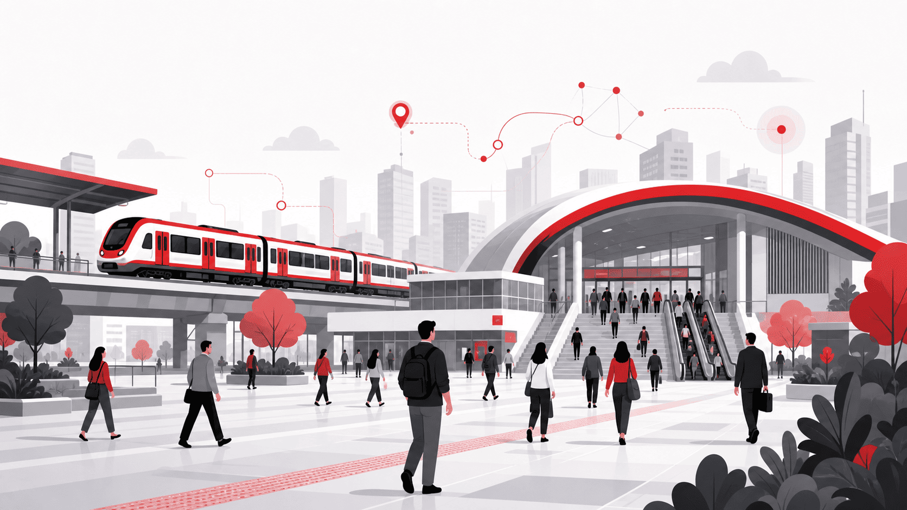
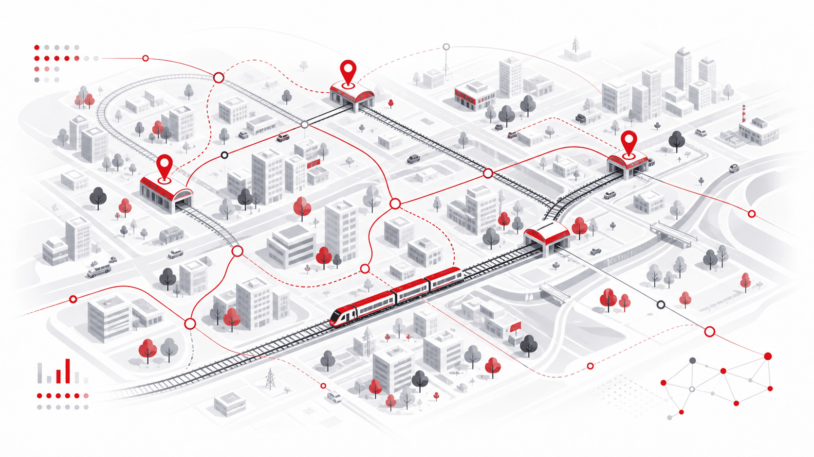

Previsibilidade
Ajuda o passageiro a entender melhor sua jornada antes de sair.
O LocalLead nasce da necessidade de transformar dados dispersos em informações simples, úteis e acessíveis para passageiros do transporte ferroviário urbano.

Milhares de pessoas utilizam o transporte ferroviário diariamente para estudar, trabalhar e se deslocar pela cidade. Apesar disso, a experiência ainda é marcada por incertezas: o passageiro nem sempre sabe quando o trem chegará, se haverá atraso, se a linha está operando normalmente ou se encontrará vagões superlotados durante o trajeto.
Essa falta de previsibilidade afeta a organização da rotina, aumenta a ansiedade durante a espera e dificulta a tomada de decisão antes mesmo da viagem começar.
Não queremos apenas mostrar o presente. Queremos ajudar o passageiro a se preparar melhor para o que pode acontecer no caminho.
O LocalLead é uma proposta de mobilidade urbana inteligente voltada ao transporte ferroviário. A solução combina dados operacionais, análise climática e inteligência preditiva para apoiar decisões antes e durante o deslocamento.
Em vez de apenas mostrar o que já aconteceu, o projeto busca antecipar riscos, indicar cenários prováveis e ajudar o usuário a tomar decisões mais inteligentes na sua jornada.
Ajuda o passageiro a entender melhor sua jornada antes de sair.
Organiza informações importantes em uma experiência simples.
Apoia decisões mais rápidas durante o deslocamento urbano.
Conecta mobilidade, dados e contexto para melhorar a rotina.
Dentro do tema Space Connect, o projeto aproxima tecnologia espacial de um problema cotidiano: a mobilidade urbana. A proposta é usar o conceito de dados espaciais e análise inteligente para interpretar clima, deslocamento e padrões urbanos.
Essa conexão permite imaginar uma cidade mais preparada, onde informações sobre ambiente, fluxo e infraestrutura ajudam a tornar o transporte mais eficiente e previsível.
O projeto foi pensado para passageiros que precisam de previsibilidade na rotina, especialmente estudantes, trabalhadores urbanos e usuários metropolitanos.
Precisam chegar no horário em escolas, faculdades e cursos técnicos.
Dependem do trem para cumprir horários e compromissos profissionais.
Utilizam o transporte ferroviário para conectar diferentes regiões da cidade.

Agora que você conhece o propósito do LocalLead, veja como a tecnologia é aplicada para apoiar a mobilidade urbana inteligente.
Ver solução